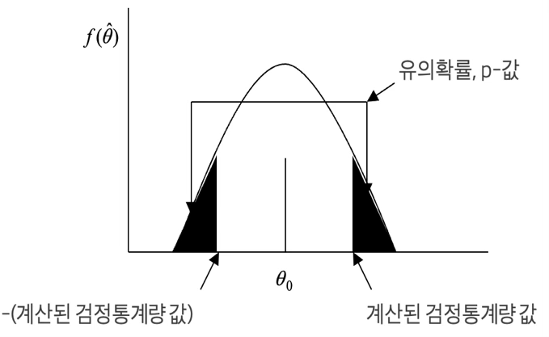
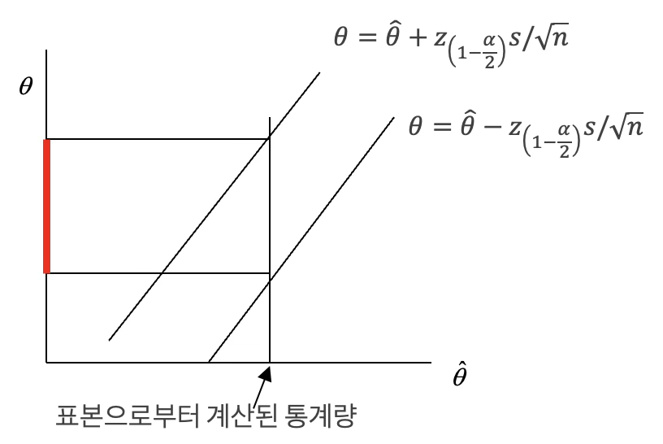
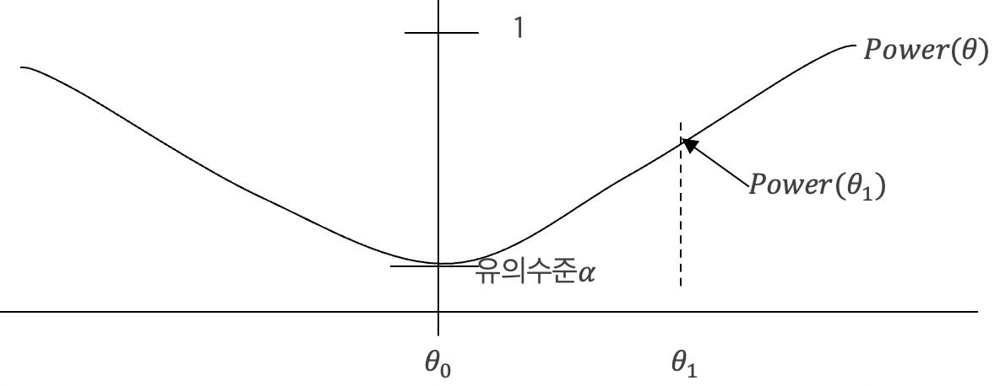
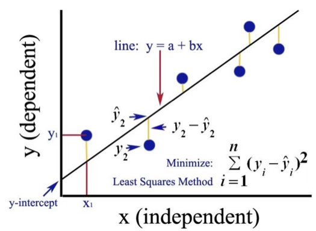

수리 통계 7. 가설검정과 신뢰구간
chapter 1. 가설검정
1. 기초
(1) 개념
추론 통계학 inference statistics 은 모집단의 특성치인 모수 \(\theta\)에 대한 추정치(점 추정치, 구간 추정치)를 구하는 추정 과 모수 값에 대한 가설의 진위 여부(통계적 유의성)를 알아보는 가설 검정 hypothesis testing이 있다.
가설 검정은 과학적 연구와 유사하다. ⑴자연 현상을 관찰하여 ⑵이론을 정립하고 (임의의 모수 값) ⑶관측치를 통하여 이론 진위 여부를 테스트 한다. 이론의 옳고 그름은 표본 관측치에 의해 판단된다.
가설검정은 무죄 추정의 원칙으로 범인의 유죄여부를 배심원의 결정과정과 동일하다. ’범인은 무죄이다’를 시작으로 ’검사가 제시한 여러 증거’(표본 데이터)를 기반하여 범인의 유죄, 무죄를 판결한다. 가설검정은 연역적 추론 과정과 유사하여 1) 자연현상, 사회현상을 관찰하여 이론을 도출하고 2)이를 통계적 가설로 만든 후 3)적절한 (확률표본) 데이터를 수집 분석하여 4)가설의 진위를 검증한다.
(2) 통계적 가설
통계적 가설은 모수에 관한 가정이다. \(X \sim f(x;\theta,\theta \in \Omega)\)의 모수 \(\theta\)가 가지는 값에 대한 가정이다. 설정한 통계적 가설은 통계적 방법으로 테스트 할 수 있도록 한 것으로 모수의 값에 관한 것이다.
불량률이 5%인 제조 공정을 개선하기 위한 새로운 공정이 제안되었다. 모수는 모집단 비율 \(\theta = p\)
기존의 약에 비해 두통에 효과적인 새로운 약을 개발하였다고 하자. 두 모집단 평균 차이 \(\theta = \mu_{old} - \mu_{new}\)
수능성적과 GPA의 관계? \(GPA = a + b \times SAT\), \(b = 0\)?
【정의】 모수 \((\theta \in \Omega = \left\{ \theta;\omega_{0} \cup \omega_{1} \right\},\omega_{0} \cap \omega_{1} = \phi)\)에 관한 통계적 가설은 다음과 같이 2개의 가설로 나뉜다.
귀무가설 null hypothesis : \(H_{0}:\theta \in \omega_{0}\), 집합 \(\omega_{0}\)에는 하나의 값 \(\omega_{0}\)만 있다.
대립가설 alternative hypothesis : \(H_{1}:\theta \in \omega_{1}\), 집합 \(\omega_{1} = \{\theta;\theta \neq \theta_{0}\}\)이다.
양측 대립가설 : \(\omega_{1} = \{\theta;\theta \neq \theta_{0}\}\)
단측 대립가설 : \(\omega_{1} = \{\theta;\theta < \theta_{0}\}\), \(\omega_{1} = \{\theta;\theta > \theta_{0}\}\)
우리가 지지하는 가설은 연구가설 research hypothesis 혹은 대립가설이라 한다. 대립가설과 반대되는 가설을 귀무가설라 한다. 어떤 가설이 지지되느냐는 관측된 표본 데이터에 의존한다. ”귀무”(null)의 의미는 아무 것도 없다는 것이다.
(3) 검정통계량
검정통계량은 통계적 가설 검정에서 사용되는 중요한 개념으로 확률표본 데이터를 기반으로 계산되며 귀무가설을 평가하는데 사용된다. 검정통계량은 일반적으로 확률표본 데이터의 요약된 값으로 귀무가설이 참일 때 얼마나 불일치하는지를 나타내는 역할을 한다. 검정통계량의 값은 귀무가설의 가정과 확률표본 데이터 간의 차이를 측정하며, 이 값을 기반으로 가설 검정의 결과를 판단한다.
예를 들어, 평균값의 차이에 대한 가설 검정을 수행한다고 가정해보자. 두 그룹의 평균을 비교하려면 먼저 평균의 차이를 계산하고, 이 차이를 그룹 간의 변동을 나타내는 표준 오차로 나누어 표준화된 차이를 얻을 수 있는데. 이 표준화된 차이가 검정통계량이 된다.
검정통계량의 값은 주어진 데이터에 따라 달라지며 이 값을 귀무가설에 대한 기대값과 비교하여 가설 검정의 결과를 결정한다. 일반적으로 검정통계량이 특정한 임계값보다 크거나 작으면 귀무가설을 기각하고 대립가설을 지지하는 결론을 내린다. 이 때 임계값은 유의수준에 따라 결정되며, 유의수준은 연구자가 허용하는 오류의 수준을 나타낸다.
【검정통계량】
\(f(x;\theta)\)에서 확률표본 \((X_{1},X_{2},\ldots,X_{n})\)의 함수인 통계량 \(t(x_{1},x_{2},\ldots,x_{n})\)이 가설 검정에 사용되면 이를 검정 통계량이라 한다.
【가설 검정 방법】
채택 영역 acceptance region: 어떤 확률표본 값들에 대하여 귀무가설을 참으로 받아들일지 결정
기각 영역 rejection region : 어떤 확률표본 값들에 대하여 귀무가설을 기각하고 대립가설을 참으로 받아들일지 결정
"귀무가설 기각"과 "대립가설 수용" 사이의 차이를 이해하는 것은 쉽지 않다. 첫 번째 경우에는 실험자가 어떤 상태를 수용하는지에 대한 내용은 함축되지 않으며, 오직 \(H_{0}\)에 의해 정의된 상태가 기각된다는 것만을 나타낸다. 마찬가지로 "귀무가설 수용"과 "귀무가설 기각하지 않음" 사이에도 차이가 있을 수 있다. 첫 번째 구문은 실험자가 \(H_{0}\)로 지정된 상태(단일 모수 값)를 주장하려고 하는 것을 의미하며, 두 번째 구문은 실험자가 실제로 \(H_{0}\)를 믿지 않지만 기각할 증거가 없다는 것을 의미한다.
(4) 기각역
확률표본 \((X_{1},X_{2},\ldots,X_{n})\)의 영역을 \(\mathcal{D}\)라 하자. \(\mathcal{D}\)의 부분 집합 \(RR\) 에 확률표본 값이 포함되면 귀무가설을 기각한다면 \(RR\) 영역을 기각역 critical region 이라 한다.
귀무가설: \(H_{0}:\theta \in \omega_{0} = \{\theta;\theta_{0}\}\) – 단일 simple 가설
대립가설: \(H_{1},H_{a}:\theta \in \omega_{1} = \{\theta;{\theta \neq \theta}_{0}\}\) 복합 composite 가설
만약 \(t\left( x_{1},x_{2},\ldots,x_{n} \right) \in RR\), 귀무가설 기각한다. ⬄ 대립가설 채택한다. 만약 \(t\left( x_{1},x_{2},\ldots,x_{n} \right) \in {RR}^{c}\), 귀무가설 채택한다. ⬄ 대립가설을 기각한다.
귀무가설을 기각하는 검정통계량의 값이 포함된 영역을 기각역 이라 한다. 만약 확률표본으로부터 계산된 검정통계량의 값이 기각역에 포함되면 귀무가설을 기각(대립가설 채택)하고 그렇지 않으면 귀무가설을 채택한다. 빨간 영역 부분이 기각역이다. 영역이 시작되는 값을 기각값, 임계값 critical value 이라 한다.
(5) 1종오류, 2종 오류
【1종 오류, 2종 오류】
1종 오류 : 귀무가설이 사실일 때 귀무가설을 기각할 확률이다. type I error, \(\alpha\) 라고 표기한다.
2종 오류 : 대립가설이 사실일 때 귀무가설을 채택하는 확률이다. type II error, \(\beta\)라 표기한다.
즉 \(\alpha,\beta\)는 통계적 가설 검정의 정확도를 측정하는데 매우 유용하다.
실제 모집단 가설 판단 |
귀무가설(\(H_{0}\)) 진실 | 대립가설(\(H_{1}\)) 진실 |
| 귀무가설 기각 | 1종 오류 \(\alpha\) | 옳은 판단 |
| 귀무가설 채택 | 옳은 판단 | 2종 오류 \(\beta\) |
가설 검정의 목표는 모든 가능한 기각 영역 중에서 이러한 오류의 확률을 최소화하는 영역을 선택하는 것이지만 일반적으로 이것은 불가능한다. 이러한 오류의 확률은 종종 풍선 효과를 가지고 있는데 이것은 극단적인 경우에 즉시 볼 수 있다.
단순히 \(RR = \phi\)라 가정해 보자. 이 기각 영역에서는 결코 귀무가설을 기각하지 않을 것이므로 제1종 오류의 확률은 0이 될 것이지만, 제2종 오류의 확률은 1이다. 종종 우리는 두 오류 중에서 제1종 오류를 더 나쁜 오류로 간주한다. 따라서 우리는 제1종 오류의 확률을 제한하는 기각 영역을 선택한 다음 이러한 기각 영역 중에서 제2종 오류의 확률을 최소화하는 하나를 선택하려고 노력하게 된다. 검정 시 설정한 1종 오류(검정 크기)을 유의수준 significance level이라 한다.
【검정 크기】
만약 \(\alpha = \max_{\theta \in \omega_{0}}{P_{\theta}(t\left( X_{1},X_{2},\ldots,X_{n} \right) \in RR)}\) 이면 기각역의 크기 size는 \(\alpha\)라 한다. 크기 \(\alpha\)의 모든 기각 영역을 고려할 때, 우리는 제2종 오류의 확률이 더 낮은 영역을 고려한다. 또한 제2종 오류의 여집합을 살펴볼 수 있는데 즉 귀무가설이 참일 때 귀무가설을 기각하는 것이며 이것은 옳은 결정이다. 우리는 이후의 결정의 확률을 최대화하려고 하므로 이 확률이 최대한 크도록 하려고 합니다. 즉, \(\theta \in \omega_{1}\)인 경우 우리는 다음을 최대화하고자 한다.
\[1 - P_{\theta}(typeIIerror) = P_{\theta}\left( \left( X_{1},X_{2},\ldots,X_{n} \right) \in RR \right)\]
【1종 오류】
1종 오류는 유의수준, 검정 크기와 동일하다. 기각역 \(C\)에 검정통계량 값이 속할 확률이다. \(P_{\theta_{0}}(t\left( X_{1},X_{2},\ldots,X_{n} \right) \in RR)\)
【2종 오류 계산】
귀무가설 \(H_{0}:\theta = \theta_{0}\), 대립가설 \(H_{1}:\theta = \theta_{1} < \theta_{0}\)의 경우 2종 오류을 계산하는 방법을 살펴 보자. 2종 오류를 계산하려면 대립가설에 속한 모수의 하나의 값이 필요하다. 대립가설의 모수 값은 구간이기 때문이다. 대립가설의 하나의 값을 \(\theta_{1}\)라 하자.
2종 오류: \(P_{\theta_{1}}(t\left( X_{1},X_{2},\ldots,X_{n} \right) \in CR)\) 검정 통계량이 기각역(\(CR\))에 속하지 않을 확률
대립가설의 \(\theta_{1}\)이 \(\theta_{0}\)에 가깝다면 대립가설이 사실임에도 불구하고 귀무가설 받아들일 가능성이 높다. 즉 2종 오류는 커진다.
(6) 검정력
【검정력 함수】
다음은 기각역의 검정력 함수 power function로 정의한다. 검정력 함수는 모수 함수이다.
\(\gamma_{C}(\theta) = P_{\theta}(t\left( X_{1},X_{2},\ldots,X_{n} \right) \in RR;\theta \in \omega_{1})\)
귀무가설 하의 모수 값에서 검정력은 1 종 오류(유의수준)이다.
【예제】 \(f(x;\theta) = \frac{1}{\theta},0 < x < \theta \sim U(0,\theta)\)에서 모수 \(\theta\)에 대한 다음 가설을 검정하기 위하여 확률표본을 추출하였다.
귀무가설 : \(H_{0}:\theta = \theta_{0}\)
대립가설 : \(H_{1}:\theta = \theta_{1} < \theta_{0}\) 단측 대립가설
검정통계량 : MVUE의 함수이며 확률밀도함수가 알려진 통계량을 이용한다. *) 모집단 비율의 MVUE는 \(\sum X_{i}/n\)이지만 \(\sum X_{i} \sim B(n,p)\) 이므로 \(T = \sum X_{i}\)을 검정 통계량으로 사용한다.
기각역 및 임계값 : 만약 \(RR = \{ t;T \leq k\}\)이면 귀무가설 기각한다. 임계값 \(\alpha = P_{\theta_{0}}(T \leq k)\)에 의해 결정된다.
검정력 함수: \(\gamma_{C}(\theta) = P_{\theta}(T \leq k),\theta \leq \theta_{0}\), 대립가설의 참 모수 값이 귀무가설 \(\theta_{0}\)에서 멀어질수록 검정력은 커진다.
【예제】 A 교수는 수리통계학 시험 점수가 평균 70점 수준으로 출제했다고 했다. 수강생이 시험을 보고 나와 어려워 70점 미만이라고 주장했다. 25명 수강생 점수를 확인한 결과 평균 69점, 표준편차 9점이었다. 수강생들의 주장을 유의수준 5%에서 검정하라. 수리통계학 점수는 정규분포를 따른다.
귀무가설: \(H_{0}:\mu_{0} = 70\)
대립가설: \(H_{1}:\mu_{1} < 70\) 단측 대립가설
검정통계량: 모집단 평균 MVUE는 \(\overline{X}\)이고 \(\frac{\overline{X} - \mu_{0}}{\frac{S}{\sqrt{n}}} = \frac{69 - 70}{\frac{9}{\sqrt{25}}} = - 1.67 \sim t(n - 1 = 24)\)이다.
기각역 및 임계값: \(0.05 = P_{\mu_{0}}(t(24) \leq k)\) 식에서 의해 결정된다. \(k = - 1.71\)
검정력 함수: \(\gamma_{C}(\theta) = P_{\mu}\left( \frac{69 - \mu}{\frac{9}{\sqrt{25}}} \leq - 1.71 \right)\)
(7) 유의확률
1종 오류, 2종 오류, 검정력을 계산하는 방법에 대해 다루었다. 가설검정 절차를 보면 ① 가설 설정과 유의수준 \(\alpha\)을 설정하고 ② 적절한 검정통계량 계산 ③ 기각역(유의수준과 검정통계량의 분포에 따라 계산된다)을 얻고 이에 따라 귀무가설 채택 여부를 결정한다.
설정된 1종 오류를 유의수준 significant level, test level 이라 하고 \((1 - \beta)\)을 검정력 power of test, test power 이라 한다. 유의수준은 일반적으로 1%, 5%, 10% (물론 5%을 가장 많이 사용하지만)을 사용하게 되므로 기각역이 달라진다. 만약 어떤 사람이 유의수준 5%에서 귀무가설을 기각하지 못했다고 발표했다. 그럼? 10%일 때는… 우리는 다시 가설 검정을 해야 한다. why? 기각역이 달라지므로…
이런 문제를 해결할 방법이 없을까? p-값 p-value, 유의확률 significant probability 개념을 도입하자. 검정통계량이 계산되면 귀무가설을 더 기각할 영역의 확률을 p-값이라 한다. 다음은 대립가설이 \(H_{1}:\theta > \theta_{0}\)일 경우 유의확률을 계산 방법이다.
【유의확률】
대립가설은 \(H_{1}:\theta = \theta_{1} > \theta_{0}\)이고 확률표본에 의해 계산된 검정통계량 값을 \(t^{*}\) 하자.
\(RR = \{{T > t}^{*}\}\).
유의확률: \({p - value = P}_{\theta_{0}}(t\left( X_{1},X_{2},\ldots,X_{n} \right) \in RR)\)
계산된 검정통계량이 귀무가설이 진실이라는 가정 하에 귀무가설을 기각할 최소의 확률을 유의확률 혹은 p-값이라 한다. 그러므로 유의확률을 계산된 유의수준이다. 계산된 검정통계량이 귀무가설을 기각할 방향(대립가설을 채택할 방향)의 영역 확률을 유의확률이라 한다.
유의확률이 주어지면 귀무가설 채택 여부를 알 수 있다. 유의확률이 유의수준보다 크다면 검정통계량의 값은 기각역에 속한 것이 아니므로 귀무가설이 채택되고 유의확률이 유의수준보다 적다면 검정통계량의 값이 기각역에 속하므로 귀무가설을 기각한다.
【예제】 모집단 \(f(x;\theta) \sim N(\mu,\sigma^{2})\)에서 표본 크기 \(n\)인 확률표본을 추출하였다. 모분산 \(\sigma^{2}\)을 알지 못할 때 nuisance parameter 귀무가설 \(H_{0}:\mu = \mu_{0}\)와 대립가설 \(H_{1}:\mu = \mu_{1} > \mu_{0}\)을 유의수준 \(\alpha\) 에서 우도비 검정방법은 \(T(\overline{x}) = \frac{\sqrt{n}(\overset{¯}{x} - \mu_{0})}{S} \sim t(n - 1)\)이다.(자세한 내용은 다음 2절. 우도비 검정을 참고하기 바란다.)
\({p - value = P}_{\theta_{0}}\left( t\left( X_{1},X_{2},\ldots,X_{n} \right) \in RR \right) = P(t(n - 1) \geq T(\overline{x}))\)
만약 대립가설 \(H_{1}:\mu = \mu_{1} \neq \mu_{0}\) (양측 대립가설)이면 \(p - value = 2P(t(n - 1) \geq |T\left( \overline{x} \right)|)\).
【유의확률과 대립가설 형태】

유의확률을 계산할 때 계산된 검정 통계량 값이 귀무가설에 설정한 모수 값(확률밀도함수의 중앙)으로부터 멀어지는 구간에 속할 확률을 구하면 된다. 단측 대립가설이면 구한 유의확률을 그대로 사용하면 되지만 양측 대립가설일 경우에는 계산된 유의확률을 2배 하여 유의확률로 사용해야 한다. 그러므로 양측 대립가설이 채택되면 단측 대립가설도 항상 성립한다.
(8) 가설검정 관련 코멘트
양측검정이냐? 단측검정이냐? 우리가 무엇에 관심을 갖느냐 하는데 있다. 불량률과 같이 ~값 미만에 관심이 있다면 왼쪽이 단측 검정, 수익과 같이 ~값 이상에 관심이 있다면 우측이 대립가설이 단측 검정을 실시한다. ”차이가 없다” 같이 양쪽 모두에 관심이 있다면 양측검정을 실시한다.
양측 대립가설이 기각되면 단측 대립가설은 항상 기각된다. 그러므로 “차이가 없다”가 기각되면 “차이가 있다”는 물론 “크다” 혹은 “적다”로 검정 결과를 내려도 된다.
1종 오류는 기각역이 정해지면 계산 가능하지만 2종 오류는 대립 가설의 값 중 임의의 값이 설정되어야 가능하다. 검정력은 (1-2종 오류) 정의된다. 또한 우리의 관심이 대립가설에 있으므로 1종 오류를 설정하고(이를 유의수준이라 한다) 2종 오류를 최소화 하는 검정 방법을 구하게 된다. (1종, 2종 오류 모두 줄이는 방법은 없다.)
단측 검정일 때 귀무가설에 대하여 대립가설이 \(H_{1}:\theta < \theta_{0}\)라면 귀무가설이 \(H_{0}:\theta \geq \theta_{0}\)은 아닌가? 1종 오류는 \(\alpha = \max_{\theta \in \omega_{0}}{P_{\theta}(t\left( X_{1},X_{2},\ldots,X_{n} \right) \in CR)}\)에 해당된다. 그러므로 Boundary 값이 \(\theta_{0}\)에서 최대화되므로 \(H_{0}:\theta = \theta_{0}\)이 적절하다. 그리고 우리의 관심은 귀무가설이 아니므로 귀무가설이 채택된다면 우리는 헛수고 한 것이다.
(9) 가설검정과 신뢰수준

유의수준 \(\alpha\)의 양측 가설 검정과 \(100(1 - \alpha)\%\)신뢰구간은 일대일 대응관계가 있다. 모집단 \(f(x;\theta = \mu)\), 확률표본, 추정량 \(\overset{\hat{}}{\theta} = \overset{¯}{X}\), 표본분산 \(S^{2}\), 귀무가설 \(H_{0}:\theta = \theta_{0}\)인 경우 대표본 이론에 의해 \(T = \frac{\overset{\hat{}}{\theta} - \theta_{0}}{\frac{S}{\sqrt{n}}}\)는 \(N(0,1)\)을 따르므로 다음이 성립한다.
\(100(1 - \alpha)\%\) 신뢰구간 : \(\theta \pm z_{\left( 1 - \frac{\alpha}{2} \right)}\frac{s}{\sqrt{n}}\)
유의수준 \(\alpha\)인 경우 기각역 : \(C = \{|\frac{\overset{\hat{}}{\theta} - \theta}{\frac{s}{\sqrt{n}}}| > z_{\left( 1 - \frac{\alpha}{2} \right)}\}\)
유의수준 \(\alpha\)인 경우 채택역 : \(C^{c} = \{\left| \frac{\overset{\hat{}}{\theta} - \theta}{\frac{s}{\sqrt{n}}} \right| \leq z_{\left( 1 - \frac{\alpha}{2} \right)}\}\)

즉 신뢰구간과 채택역은 동일함을 알 수 있다. 신뢰구간에 속한 모수 값이 귀무가설에 설정되면 그 귀무가설은 기각되지 않는다. 표본으로부터 통계량이 계산되면 신뢰구간의 식에의해 모수에 대한 구간이 결정된다. 그 부분이 빨간 영역 부분이다.귀무가설에 빨간 영역 안에 있는 모수 값이 설정되면 귀무가설을 기각하지 못한다.
단측 가설 검정과 상한(혹은 하한) 신뢰구간도 일대일 관계가 있다. \(100(1 - \alpha)\%\) 하한 신뢰구간은 유의수준 \(\alpha\), 귀무가설 \(H_{0}:\theta = \theta_{0}\), 대립가설: \(H_{0}:\theta_{1} > \theta_{0}\)의 채택역과 동일하다. 또한 상한신뢰구간 대립가설 \(H_{0}:\theta_{1} < \theta_{0}\)의 채택역과 동일하다.
【예제】 정부는 PC 구입 가격이 900$이라고 발표했다. 이를 알아보기 위하여 소비자 55명을 임의 조사하였더니 평균 885$, 표준편차는 50$이었다.
모집단 평균에 대한 99%(양측)신뢰구간을 구하시오. (\(\overset{¯}{X} \pm Z_{0.995}\frac{S}{\sqrt{n}}) \rightarrow (885 \pm 2.58\frac{50}{\sqrt{25}}) \rightarrow (859.2,910.8)\)
정부의 발표가 진실이라고 할 수 있나(유의수준 1%)? 유의수준 1% 검정 통계량 : \(\frac{\overset{¯}{X} - \mu_{0}}{\frac{S}{\sqrt{n}}} = \frac{885 - 900}{\frac{50}{\sqrt{25}}} = - 0.5\)
기각역 : \(C = \{ t;|t| < 2.58\}\) 검정 통계량 값이 기각역에 속하지 않으므로 귀무가설을 채택한다. 유의수준 1%에서 귀무가설 값이 99% 신뢰구간에 속하므로 귀무가설 채택하게 되므로 신뢰구간을 계산한 경우에는 가설검정을 할 필요가 없다.
(10) 랜덤화 검정
가설 검정에서 설정한 유의수준에 의해 기각역이 설정되는데 이산형 확률분포의 경우 설정된 유의수준 정확한 값에 대응하는 기각역을 설정하지 못하는 경우가 발생하는 경우 랜덤화 검정을 실시한다. 예제로 이 개념을 설명하기로 한다.
【예제】 \(f(x;\theta = \lambda) \sim Poisson(\theta)\)의 모수 \(\theta\)에 대한 가설 검정을 위하여 표본크기 \(n = 10\)인 확률표본 \((X_{1},X_{2},\ldots,X_{10})\)을 추출하였다. 귀무가설 \(\theta = 0.1\), 귀무가설 \(\theta > 0.1\)을 유의수준 5%에서 검정하려고 할 때 기각역을 구하라
검정 통계량: \(T = \sum_{i}^{10}X_{i} \sim Poisson(\lambda = 10\theta)\)
기각역: \(P_{\theta_{0} = 0.1}(T \geq 3) = 0.08\), \(P_{\theta_{0} = 0.1}(T \geq 4) = 0.019\) 이처럼 유의수준 5%에 해당하는 기각역 얻을 수 없다. 보간법에 의해 \(\frac{0.05 - 0.019}{0.08 - 0.019} = \frac{31}{61}\) 이다. 그러므로 유의수준 5% 기각역은 다음과 같다. 만약 \((T \geq 4)\) 귀무가설을 기각하고 \((T = 3)\)이면 \(\frac{31}{61}\) 확률로 기각한다.
2. 가설검정 방법
(1) 최강 검정법
검정방법의 정도 goodness는 1종 오류와 2종 오류로 판단하는데 가설검정 시작 시 1종 오류는 유의수준으로 설정되므로 좋은 검정 방법이란 2종 오류를 최소화 하는 것이다. 즉 (1-2종 오류), 검정력 최대화 하는 것이다. 이를 최강 검정법 most powerful test 이라 한다.
모집단 확률변수 \(X \sim f(x;\theta),\theta \in \Omega = \{\omega_{0} \cup \omega_{1}\}\)이고 다음 2개의 단일 귀무가설과 대립가설을 가정하자.
귀무가설 : \(H_{0}:\theta \in \omega_{o}\)
대립가설 : \(H_{1}:\theta \in \omega_{1}\)
모집단 확률변수 \(X \sim f(x;\theta)\) 에서 확률표본 \({\overline{X}}' = (X_{1},X_{2},\ldots,X_{n})\)이라 하고 \(\mathcal{S}\)을 확률표본 영역이라 하자.
【유의수준】 확률표본의 영역을 \(\mathcal{S}\), 확률표본 영역의 부분 집합 \(RR \in \mathcal{S}\)이라 하자. 다음 \(\alpha\)을 1종 오류 type I error, 유의수준 significant level 이라 한다. \(\alpha = \max_{\theta \in \omega_{0}}{P_{\theta}\left( T\left( X_{1},X_{2},\ldots,X_{n} \right) \in RR \right)}\).
【검정력】 다음을 검정력 power function 이라 정의한다.
\({{P(\theta) = \gamma}_{RR}(\theta) = P}_{\theta}\left( T\left( X_{1},X_{2},\ldots,X_{n} \right) \in RR \right);\theta \in \omega_{1}\)
【예제】 표본크기 5인 확률표본 \(\left( X_{1},X_{2},\ldots,X_{5} \right) \sim B(p)\)을 이용하여 \(H_{0}:p = 0.5vs.H_{1}:p > 0.5\) 가설을 검정한다고 하자.
(1) 기각역을 \(RR = \{\sum x_{i} = 5\}\)
1종 오류: \(\alpha = P(\sum x_{i} = 5,\sum x_{i} \sim B(5,0.5)) = 0.031\)
2종 오류 : \(\beta(p) = P(\sum x_{i} \leq 4,\sum x_{i} \sim B(5,p > 0.5))\)
검정력 : \(Power(p) = 1 - \beta(p)\)이므로 \(p = 0.5\)에서 멀어질수록 검정력은 커진다. \(p = 1\)일 때 검정력은 0이다.
(2) 기각역을 \(RR = \{\sum x_{i} \geq 3\}\)
1종 오류 : \(\alpha = P(\sum x_{i} \geq 5,\sum x_{i} \sim B(5,0.5)) = 0.5\)
2종 오류 : \(\beta(p) = P(\sum x_{i} \leq 4,\sum x_{i} \sim B(5,p > 0.5))\)
\(RR = \{\sum x_{i} = 5\}\)에 비해 1종 오류는 늘었으나 2종 오류는 줄었다. 검정력은 커졌다. 즉, 1종 오류와 2종 오류를 동시에 줄이는 검정방법은 존재하지 않는다.
【최강 검정력】 확률표본의 영역을 \(\mathcal{S}\), 확률표본 영역의 부분 집합 \(RR \in \mathcal{S}\)이라 하자. 다음 조건을 만족하는 \(RR\)을 검정 크기 \(\alpha\)에서 귀무가설 \(H_{0}:\theta = \theta_{0}\), 대립가설 \(H_{1}:\theta = \theta_{1}\)을 검정하는 최량 기각역 best critical region이다. \(\max_{\theta \in \omega_{0}}{P_{\theta}\left( T\left( X_{1},X_{2},\ldots,X_{n} \right) \in RR \right)} = \alpha\)
임의의 부분집합 \(A \in \mathcal{D}\)에 대하여 다음이 성립한다.
\(P_{\theta_{0}}\left( T\left( X_{1},X_{2},\ldots,X_{n} \right) \in A \right) = > P_{\theta_{1}}\left( T\left( X_{1},X_{2},\ldots,X_{n} \right) \in RR \right) \geq P_{\theta_{1}}\left( T\left( X_{1},X_{2},\ldots,X_{n} \right) \in A \right)\)
【예제】 모집단 \(X \sim B(p = \theta)\) 에서 귀무가설 \(H_{0}:p = 0.1\), 대립가설 \(H_{0}:p = 0.2\) 가설을 검정하기 위하여 표본크기3인 확률표본을 추출한 결과는 \((1,0,0)\) 이다.
기각역을 \(RR = \{ T(\overline{x});\sum X_{i} \geq 1\}\)이라 하자. \(\sum X_{i} \sim B(n = 3,p)\)분포를 따른다.
유의수준: \({P_{p = 0.1}\left( T\left( X_{1},X_{2},\ldots,X_{n} \right) \in RR \right)}{= 0.243 + 0.027 + 0.001 = 0.271}\)
2종 오류: \({P_{p = 0.2}\left( T\left( X_{1},X_{2},\ldots,X_{n} \right) \in RR^{C} \right)}{= 0.5121}\)
검정력 : \(1 - 0.5121 = 0.4879\)
\[\sum x\] 0 1 2 3 \[f(x;p = 0.1)\] 0.729 0.243 0.027 0.001 \[f(x;p = 0.2)\] 0.512 0.384 0.096 0.008 \[\frac{f(x;p = 0.1)}{f(x;p = 0.2)}\] 1.424 0.633 0.281 0.125
만약 대립가설의 모수 하나의 값(대립가설은 귀무가설과는 달리 모수의 영역이다)을 \(\theta_{1}\)라 한다면 검정력은 \({P(\theta) = P}_{\theta}\left( T\left( X_{1},X_{2},\ldots,X_{n} \right) \in RR^{C}|\theta = \theta_{1} \right)\)이고 2종오류는 \(\beta(\theta) = 1 - P(\theta)\) 이다. \(H_{0}:\theta = \theta_{0}vs.H_{1}:\theta = \theta_{1} \neq \theta_{0}\) 가설검정의 경우 전형적인 검정력 함수는 다음과 같다.

검정력은 귀무가설 단일 설정 값 \(\theta_{0}\)에서 최저였다가 멀어질수록 증가한다. 그러므로 유의수준 \(\alpha\)을 설정하고 2종 오류를 최소화할 수 있는 검정 방법(기각역 찾음)을 찾는다.
【most powerful test 최강력 검정법】
가설에 설정된 모수 값이 하나인 경우 이를 단순가설이라 하고 설정된 모수가 영역인 경우 이를 복합가설이라 한다. 단순 귀무가설 \(H_{0}:\theta = \theta_{0}\)와 단순 대립가설 \(H_{1}:\theta = \theta_{1}\)을 검정한다고 하자. 모수 영역은 \(\Omega = \{\theta;\theta_{0},\theta_{1}\}\)이고 \(P(\theta) = \alpha\)인 기각역을 설정하고 \(\beta(\theta) = 1 - p(\theta)\) 을 최소화 하는 기각역을 구한다. 이는 \(P(\theta_{1})\)을 최대화 하는 최강 검정력 검정 most powerful test을 찾는 것과 동일하다.
【Neyman-Pearson Lemma】 단순 귀무가설 \(H_{0}:\theta = \theta_{0}\)와 단순 대립가설 \(H_{1}:\theta = \theta_{1}\)을 검정한다고 하자. 가설 검정을 확률표본 \(\overline{X} = \left( X_{1},X_{2},\ldots,X_{n} \right)\)으로부터 구한 통계량을 이용한다. 이 통계량의 확률밀도함수(샘플링 분포)는 모수 \(\theta\)의 함수이며 이를 우도 함수 \(L(\overline{x};\theta)\)라 한다. 유의수준 \(\alpha\) 하에서 검정력을 최대화 하는 기각역 \(RR\)은 다음에 의해 정해진다. 이렇게 얻은 검정 방법(기각역)을 최강력 검정법이라 한다.
\(\frac{L({\overline{x};\theta}_{0})}{L({\overline{x};\theta}_{1})} \leq k,for\overline{x} \in RR\).
\(\frac{L({\overline{x};\theta}_{0})}{L({\overline{x};\theta}_{1})} \geq k,for\overline{x} \in RR^{C}\).
\[{{\alpha = P}_{H}}_{0}(\overline{x} \in RR)\]
【불편 검정방법】 모집단 \(X \sim f(x;\theta),\theta \in \Omega\) 에서 확률표본 \(\overline{X} = \left( X_{1},X_{2},\ldots,X_{n} \right)\), 기각역은 \({{\alpha = P}_{H}}_{0}(\overline{x} \in RR)\)이라 하면 다음을 불편 unbiased 검정방법이다. \(P_{\theta}\left( \overline{X} \in RR \right) \geq \alpha,forall\theta \in \omega_{1}\)
【예제】 확률표본 \(\overline{X} = \left( X_{1},X_{2},\ldots,X_{n} \right) \sim f(x;\theta = \mu)\sim N(\mu,1)\)이고 귀무가설 \(H_{0}:\mu = 0\), 대립가설 \(H_{0}:\mu = 1\) 검정하는 최강 기각역을 구하라.
N-P Lemma 의해 최강 기각역 : \(\frac{L({\overline{x};\theta}_{0} = 0)}{L({\overline{x};\theta}_{1} = 1)} = \frac{N(0,1)}{N(1,1)} = \exp\left( - \sum x_{i} + \frac{n}{2} \right) \leq k\) \[\Leftrightarrow - \sum x_{i} + \frac{n}{2} \leq \ln(k) \Leftrightarrow \sum x_{i} > - \frac{n}{2} - \ln{(k) \Leftrightarrow}\frac{\sum x_{i}}{n} > c\]
그러므로 최강 기각역은 \(RR = \left\{ \left( x_{1},x_{2},\ldots,x_{n} \right);\overline{x} \geq c \right\},\overline{x} \sim N(0,\frac{1}{n})\).
유의수준 \(\alpha\) 임계값 critical value, \(c_{1}\) 결정 : \({P_{H}}_{0}\left( \overline{x} \geq c \middle| \mu = 0 \right) = \int_{c}^{\infty}{\frac{1}{\sqrt{2\pi}\sqrt{1/n}}\exp\left( - \frac{\left( \overset{¯}{x} - 0 \right)^{2}}{2(1/n)} \right)d\overset{¯}{x}} = \alpha\)을 만족하는 \(c\) 값을 기각역의 시작 값인 임계값 \(c_{1}\)이다.
검정력: \({P_{H}}_{1}\left( \overline{x} \geq c_{1} \middle| \mu = 1 \right) = \int_{c_{1}}^{\infty}{\frac{1}{\sqrt{2\pi}\sqrt{1/n}}\exp\left( - \frac{\left( \overset{¯}{x} - 1 \right)^{2}}{2(1/n)} \right)d\overset{¯}{x}}\)
【예제】 확률표본 \(\overline{X} = \left( X_{1},X_{2},\ldots,X_{n} \right) \sim f(x)\)이고 귀무가설, 대립가설이 아래와 같이 확률분포함수인 경우 최강 기각역을 구하라.
귀무가설: \(H_{0}:f_{0}(x) = \frac{e^{- 1}}{x!}\sim Poisson(\lambda = 1),x = 0,1,2,\ldots\)
대립가설: \(H_{1}:f_{1}(x) = \left( \frac{1}{2} \right)^{x + 1},x = 0,1,2,\ldots\)
우도비 : \(\frac{f_{0}(x)}{f_{1}(x)} = \frac{\left( 2e^{- 1} \right)^{n}2^{\sum x_{i}}}{\Pi x_{i}!}\)
최강 기각역 : \(\frac{\left( 2e^{- 1} \right)^{n}2^{\sum x_{i}}}{\Pi x_{i}!} \leq k \Leftrightarrow \left( \sum x_{i} \right)\ln(2) - \ln\left( \Pi x_{i}! \right) \leq ln)k) - nln(2e^{- 1}) = c\)
【예제】 모집단 \(f(x;\theta) \sim B(p),x = 0,1\)에서 모수 \(\theta = p\)에 대한 가설 검정을 위하여 표본 크기 \(n\)인 확률표본 \(\overline{X} = \left( X_{1},X_{2},\ldots,X_{n} \right)\) 을 추출하였다. 귀무가설 \(H_{0}:p_{0} = 0.5\), 대립가설 \(H_{1}:p_{1} = 0.1\)을 유의수준 0.05에서 검정하는 최강 검정방법을 찾아라.
N-P Lemma에 의해 \(\frac{L\left( \overline{x}{;\theta}_{0} \right)}{L\left( \overline{x}{;\theta}_{1} \right)} = \frac{{0.5}^{\sum x_{i}}{0.5}^{n - \sum x_{i}}}{{0.2}^{\sum x_{i}}{0.8}^{n - \sum x_{i}}} \leq k \Leftrightarrow \sum x_{i} \leq c\) 이 일양 최강 기각역이다.
\(\sum x_{i} \sim B(n,p)\)이므로 \(0.05 = P(\sum x_{i} \leq c|\sum x_{i} \sim B(n,0.5))\)을 만족하는 정수 \(c\)를 찾을 수 없다. 앞에서 살펴본 랜덤화 검정방법을 이용하여 검정하면 된다.
(2) 일양 최강 검정
【일양 최강 검정법】 귀무가설 \(H_{0}:\theta = \theta_{0}\), 단순 대립가설 \(H_{1}:\theta = \theta_{1} < \theta_{0}\)의 최강 검정 기각역 \(RR\)이 모든 복합 대립가설 \(H_{1}:\theta = \theta_{1} < \theta_{0}\)의 최강 기각역이면 \(RR\)에 의한 검정방법을 일양 최강 검정법 uniformly most powerful test 이라 한다.
【예제】 모집단 \(f(x;\theta) = \frac{1}{\theta}e^{- x/\theta},x > 0\)에서 모수 \(\theta\)에 대한 가설 검정을 위하여 표본 크기 \(n\)인 확률표본 \(\overline{X} = \left( X_{1},X_{2},\ldots,X_{n} \right)\) 을 추출하였다. 귀무가설 \(H_{0}:{\theta = \theta}_{0}\) 대립가설 \(H_{1}:{\theta = \theta}_{1} < \theta_{0}\)을 유의수준 \(\alpha\)에서 검정하는 일양 최강 검정방법을 찾아라.
N-P Lemma에 의해 \(\frac{L\left( \overline{x}{;\theta}_{0} \right)}{L\left( \overline{x}{;\theta}_{1} \right)} = \frac{\frac{1}{\theta_{0}^{n}}e^{- \frac{\sum x}{\theta_{0}}}}{\frac{1}{\theta_{1}^{n}}e^{- \frac{\sum x}{\theta_{1}}}} \leq k \Leftrightarrow \sum x_{i} \leq c\) 이 일양 최강 기각역이다. \(RR = \{\sum x_{i} \leq c\}\) 이 UMPT 기각역이다. 항상 기각역에 사용되는 통계량의 분포는 알려져 있어야 가능하다. \(\sum x_{i} \sim Gamma(n,\theta)\). 임계값은 \(0.05 = P(\sum x_{i} \geq c|\sum x_{i} \sim Gamma(n,\theta_{0}))\)을 만족하는 \(c\)값이다.
동일한 방법으로 귀무가설 \(H_{0}:{\theta = \theta}_{0}\) 대립가설 \(H_{1}:{\theta = \theta}_{1} > \theta_{0}\)을 유의수준 \(\alpha\)에서 검정하는 일양 최강 검정력은 \(RR = \{\sum x_{i} \geq c|\sum x_{i} \sim Gamma(n,\theta)\}\).
그러나 대립가설 \(H_{0}:{\theta = \theta}_{1} \neq \theta_{0}\)이면 Uniformly Most Powerful Test는 존재하지 않는다.
【예제】 모집단 \(f(x;\theta) \sim N(0,\theta)\)에서 모수 \(\theta\)(분산)에 대한 가설 검정을 위하여 표본 크기 \(n\)인 확률표본 \(\overline{X} = \left( X_{1},X_{2},\ldots,X_{n} \right)\) 을 추출하였다. 귀무가설 \(H_{0}:{\theta = \theta}_{0}\) 대립가설 \(H_{1}:{\theta = \theta}_{1} > \theta_{0}\)을 유의수준 \(\alpha\)에서 검정하는 일양 최강 검정방법을 찾아라.
N-P Lemma에 의해 \(\frac{L\left( \overline{x}{;\theta}_{0} \right)}{L\left( \overline{x}{;\theta}_{1} \right)} = \frac{\left( \frac{1}{2\pi\theta_{0}} \right)^{\frac{n}{2}}exp( - \frac{1}{2\theta_{0}}\sum x_{i}^{2})}{\left( \frac{1}{2\pi\theta_{1}} \right)^{\frac{n}{2}}exp( - \frac{1}{2\theta_{1}}\sum x_{i}^{2})} \leq k \Leftrightarrow \sum x_{i}^{2} \geq c\)이 일양 최강 기각역이다.
그러나 \(\sum x_{i}^{2}\)의 확률밀도함수는 알 수 없으므로 기각역에 사용되는 검정 통계량은 \(\frac{\sum x_{i}^{2}}{\theta_{0}} \sim \chi^{2}(n - 1)\) 분포를 따르므로 \(\frac{\sum x_{i}^{2}}{\theta_{0}}\)을 이용하는데 이 통계량을 주축 pivotal 검정 통계량이라 한다.
【단조우도비】 만약 우도비 \(\frac{L\left( \overline{x}{;\theta}_{0} \right)}{L\left( \overline{x}{;\theta}_{1} \right)},for\theta_{0} < \theta_{1}\)가 \(y = u(x)\)의 단조 함수이면 우도함수 \(L\left( \overline{x};\theta \right)\)은 통계량 \(y = u(x)\)의 단조 우도비 monotone likelihood ratio(mlr)을 갖는다.
\(\frac{L\left( \overline{x}{;\theta}_{0} \right)}{L\left( \overline{x}{;\theta}_{1} \right)} \leq k \Leftrightarrow t\left( x_{1},x_{2},\ldots,x_{n} \right) \in RR\). \(\alpha = P_{\theta_{0}}(t\left( x_{1},x_{2},\ldots,x_{n} \right) \in RR)\)을 만족하는 \(k\)가 임계값이다.
\(\frac{L\left( \overline{x}{;\theta}_{0} \right)}{L\left( \overline{x}{;\theta}_{1} \right)} = g(Y) \leq k \Leftrightarrow Y \geq g^{- 1}(k)\). \(g^{- 1}(k)\)는 \(\alpha = P_{\theta_{0}}(Y \geq g^{- 1}(k))\)을 만족한다.
【예제】 모집단 \(f(x;\theta) \sim B(\theta = p),0 < \theta < 1\)에서 모수 \(\theta\)에 대한 가설 검정을 위하여 표본 크기 \(n\)인 확률표본 \(\overline{X} = \left( X_{1},X_{2},\ldots,X_{n} \right)\) 을 추출하였다. 귀무가설 \(H_{0}:{\theta = \theta}_{0}\) 대립가설 \(H_{1}:{\theta = \theta}_{1} > \theta_{0}\)을 유의수준 \(\alpha\)에서 검정하는 일양 최강 검정방법을 찾아라.
\(\frac{L\left( \overline{x}{;\theta}_{0} \right)}{L\left( \overline{x}{;\theta}_{1} \right)} = \frac{{\theta_{0}}^{\sum x_{i}}{\theta_{0}}^{n - \sum x_{i}}}{{\theta_{1}}^{\sum x_{i}}{\theta_{1}}^{n - \sum x_{i}}} = \left( \frac{\theta_{0}(1 - \theta_{1})}{\theta_{1}(1 - \theta_{0})} \right)^{\sum x_{i}}\left( \frac{1 - \theta_{0}}{1 - \theta_{1}} \right)^{n}\)이므로 우도비는\(y = \sum x_{i}\)의 단조 함수이다. 그러므로 UMPT 기각역은 \(RR = \{\sum x_{i} \geq c\}\)이다.
【지수족 UMPT】
모집단 확률밀도함수가 지수족이면 다음 가설의 일양 최강 검정 기각역은 \(RR = \{ y = \sum K\left( x_{i} \right) \geq c\}\)이다.
귀무가설 : \(H_{0}:\theta = \theta_{0}\) vs. 대립가설 : \(H_{1}:\theta = \theta_{1} > \theta_{0}\)
만약 대립가설 : \(H_{1}:\theta = \theta_{1} < \theta_{0}\) 이면 일양 최강 검정 기각역은 \(RR = \{ y = \sum K\left( x_{i} \right) \leq c\}\)이다.
(3) 우도비 검정
단순 귀무가설과 단순 대립가설에 대한 Most powerful test을 얻으려면 Neyman-Pearson 정리를 이용하면 된다. 물론 대립가설이 단측 가설(한 쪽 방향)에 Most powerful 검정을 얻을 수 있지만… 양측 검정이나 Nuisance parameter가 있는 경우에는 N-P 정리를 사용할 수 없다.
모수 θ 영역을 \(\Omega\)라 하자. 귀무가설에 설정된 모수 값은 단일 값으로 \(\Omega_{0} = \{\theta_{0}\}\)이고 대립가설의 모수 공간은 \(\Omega_{1} = \Omega_{0}^{C}\)이다. 전체 모수 공간 \(\Omega\)에서 우도함수를 \(L\left( \overline{x};\Omega \right)\)라 정의하고 모수에 대한 MLE(최대우도추정량)을 추정치로 사용한 우도함수를 \(L\left( \overline{x};\overset{\hat{}}{\Omega} \right)\)라 하자.
【우도비 검정】 귀무가설 \(H_{0}:\theta \in \Omega_{0}\), 대립가설 \(H_{1}:\theta \in \Omega_{0}^{C}\) 검정하는 우도 통계량은 \(\lambda\left( \overline{x} \right) = \frac{\max_{\Omega_{0}}{L\left( \overline{x};\Omega_{0} \right)}}{\max_{\Omega}{L\left( \overline{x};\Omega \right)}}\)이다. 우도비 검정 likelihood ratio test 기각역은 \(\left\{ \lambda\left( \overline{x} \right) \leq c \right\}\)이다. \(c\)는 \(0 < c < 1\)의 값을 갖는다.
만약 \(\lambda \rightarrow 0\)이면 귀무가설 하의 우도함수 값이 매우 작다는 것을 의미하므로 대립가설에 비해 귀무가설을 기각하는 것이 적절하다. 만약 \(\lambda \rightarrow 1\)이면 귀무가설이 진실일 가능성이 높다. 그러므로 기각역이 \(\lambda \leq c\) 이다.
【예제】 모집단 \(f(x;\theta) \sim N(\mu,\sigma^{2})\)에서 표본 크기 \(n\)인 확률표본 \(\overline{X} = \left( X_{1},X_{2},\ldots,X_{n} \right)\) 을 추출하였다. 모분산 \(\sigma^{2}\)을 알지 못할 때 nuisance parameter 귀무가설 \(H_{0}:\mu = \mu_{0}\)와 대립가설 \(H_{1}:\mu = \mu_{1} > \mu_{0}\)을 유의수준 \(\alpha\)에서 우도비 검정방법을 찾으시오.
귀무가설 하 모수 공간은 \(\Omega_{0} = \{\mu,\sigma_{0};\mu = \mu_{0},\sigma^{2} > 0\}\), 대립가설 하에서 모수 공간은 \(\Omega_{1} = \{\mu,\sigma_{1};\mu > \mu_{0},\sigma_{1}^{2} > 0\}\)이므로 모수 전체 공간은 \(\Omega = \{\mu,\sigma;\mu \geq \mu_{0},\sigma^{2} > 0\}\)이다.
\(L\left( \overline{x};\Omega_{0} \right) = \Pi\frac{1}{\sqrt{2\pi}\sigma}exp( - \frac{\left( x_{i} - \mu_{0} \right)^{2}}{2\sigma^{2}})\)이고 귀무가설 모평균은 \(\mu_{0}\)로 주어져 있으니 모분산에 대한 MLE 추정치를 구하면 \(\overset{\hat{}}{\sigma_{0}^{2}} = \frac{1}{n}\sum\left( x_{i} - \mu_{0} \right)^{2}\)이다.
\(L\left( \overline{x};\Omega \right)\)에서 \(\mu\)의 MLE는 \(\overset{\hat{}}{\mu} = max(\overset{¯}{x},\mu_{0})\)이다. 왜냐하면 모수 공간 \(\Omega\)의 \(\mu \geq \mu_{0}\)이기 때문이다. 모분산에 대한 MLE 추정치는 \(\overset{\hat{}}{\sigma} = \frac{1}{n}\sum\left( x_{i} - \overset{\hat{}}{\mu} \right)^{2}\)이다.
\(\lambda = \frac{L(\overset{\hat{}}{\Omega_{0}})}{L(\overset{\hat{}}{\Omega})} = \left( \frac{\overset{\hat{}}{\sigma_{0}^{2}}}{\overset{\hat{}}{\sigma^{2}}} \right)^{\frac{n}{2}} = \left\{ \begin{array}{r} \left( \frac{\sum\left( x_{i} - \overset{¯}{x} \right)^{2}}{\sum\left( x_{i} - \mu_{0} \right)^{2}} \right)^{\frac{n}{2}} \\ 1,if\overline{x} \leq \mu_{0} \end{array},if\overline{x} > \mu_{0} \right.\ \) .
\(\sum\left( x_{i} - \mu_{0} \right)^{2} = \sum\left( x_{i} - \overset{¯}{x} \right)^{2} + \sum\left( \overset{¯}{x} - \mu_{0} \right)^{2}\) 이므로 정리하면
\[\lambda = \left( \frac{\sum\left( x_{i} - \overset{¯}{x} \right)^{2}}{\sum\left( x_{i} - \mu_{0} \right)^{2}} \right)^{\frac{n}{2}} \leq k \Leftrightarrow \frac{\sum\left( x_{i} - \overset{¯}{x} \right)^{2}}{\sum\left( x_{i} - \mu_{0} \right)^{2}} \leq k^{\frac{2}{n}} \Leftrightarrow \frac{\sum\left( x_{i} - \overset{¯}{x} \right)^{2}}{\sum\left( x_{i} - \overset{¯}{x} \right)^{2} + \sum\left( \overset{¯}{x} - \mu_{0} \right)^{2}} \leq k^{\frac{2}{n}}\]
\[\Rightarrow \frac{\sqrt{n}(\overset{¯}{x} - \mu_{0})}{S} > c,whereS^{2} = \sum\left( x_{i} - \overset{¯}{x} \right)^{2}/(n - 1)\]
\(\frac{\sqrt{n}(\overset{¯}{x} - \mu_{0})}{S}\)은 t-분포를 따르므로 우도비 검정은 t-검정과 일치한다.
【예제】 모집단 \(f(x;\theta) = e^{- (x - \theta)},x \geq 0\)에서 표본 크기 \(n\)인 확률표본 \(\overline{X} = \left( X_{1},X_{2},\ldots,X_{n} \right)\)을 추출하였다. 귀무가설 \(H_{0}:\theta = \theta_{0}\)와 대립가설 \(H_{1}:\theta > \theta_{0}\)을 유의수준 \(\alpha\)에서 우도비 검정방법을 찾으시오.
우도 함수는 \(L\left( \overline{x};\theta \right) = \Pi e^{- (x - \theta)} = e^{- \sum(x_{i} - \theta)},\theta \leq x_{(1)}\)이므로 우도 함수는 모수 \(\theta\)의 증가함수이다.
\(\lambda = \frac{L(\overset{\hat{}}{\Omega_{0}})}{L(\overset{\hat{}}{\Omega})} = \frac{e^{- \sum(x_{i} - \theta_{0})}}{e^{- \sum(x_{i} - x_{(1)})}} = \left\{ \begin{array}{r} e^{- n\left( x_{(1)} - \theta_{0} \right)},ifx_{(1)} > \theta_{0} \\ 1,ifx_{(1)} \leq \theta_{0} \end{array} \right.\ \)
기각역 \(\{\lambda \leq k\} \Leftrightarrow \{\overline{x};x_{(1)} \geq \theta_{0} - \frac{ln(c)}{n}\}\)
일반적으로 우도비 검정의 경우 검정통계량의 분포를 아는 것은 쉽지 않다. 이런 경우 다음 정리를 이용하여 검정하게 된다.
【정리】 \(\lambda = \frac{L(\overset{\hat{}}{\Omega_{0}})}{L(\overset{\hat{}}{\Omega})}\)라 정의하자. 표본의 크기 \(n\)이 충분히 크다면 귀무가설 \(H_{0}:\theta \in \Omega_{0}\), 대립가설 \(H_{1}:\theta \in \Omega_{1}\)에 대한 우도비(LTR) 검정은 검정통계량 \(\lambda\)에 대해 다음이 성립한다.
\(- 2\ln(\lambda) \sim (app)\chi^{2}(r_{0} - r)\), \(r\)은 모수 공간 \(\Omega\)하에서 설정된 모수의 개수이고 \(r_{0}\)은 모수 공간 \(\Omega_{0}\) 하에서 설정된 모수의 개수이다.
【예제】 작업 라인이 2개 있다. 각 작업을 일주일 단위로 생산된 제품에 대한 불량 개수를 조사하였더니 작업라인1은 평균 20, 작업라인 2는 22이다(표본의 개수는 각각 100이다). 불량 개수는 포아송 분포를 따르고 작업 라인 1의 평균을 \(\lambda_{1}\), 작업 라인 2의 평균을 \(\lambda_{2}\)라 하자. 귀무가설 \(H_{0}:\lambda_{1} = \lambda_{2}\)와 대립가설 \(H_{0}:\lambda_{1} \neq \lambda_{2}\)을 검정하는 우도비 검정을 유의수준 0.01에서 실시하자.
작업라인 1의 확률표본을 \((X_{1},X_{2},...,X_{n})\), 작업라인 2의 확률표본을 \((Y_{1},Y_{2},...,y_{n})\)라 하자.
귀무가설 모수 공간은 \(\Omega_{0} = \{\lambda_{1} = \lambda_{2} = \lambda\}\)이고 전체 모수 공간은 \(\Omega = \{\lambda_{1} = \lambda_{2} > 0\}\)이다.


귀무가설에서 설정된 귀무가설의 수는 1이고 전체 모수의 수는 2이다. 그러므로 \(- 2ln\lambda \sim \chi^{2}(df = 2 - 1 = 1)\)이 성립한다. 자유도 1이고 유의수준이 0.01인 경우 기각치(임계치)는 \(\chi^{2}\)-분포표에 의해 6.635이다. 9.53이 기각역에 속하므로 귀무가설은 기각된다.
chapter 2. 구간 추정
앞에서는 모수 \(\theta\)의 점 추정에 대해 논의했는데 \(\theta\)의 값을 하나의 추정치로 추측하는 것입니다. 여기서는 구간 추정 및 더 일반적으로 집합 추정에 대해 논의한다. 집합 추정 문제에서의 추론은 \(\theta\)이 구간 \(C(\overline{x})\)에 속한다."라는 추정됩니다. 즉, \(P\left( \overset{\hat{}}{\theta} = \theta \right) = 0\)(점 추정차와 모수가 같을 확률은 0이지만 \(P(\theta \in C(\overline{x}))\)는 0보다 큰 확률을 가지게 되는데 이를 신뢰수준이라 한다.
1. 구간추정
【구간 추정량】
모집단 \(f(x;\theta),\overline{x} \in \mathcal{S}\)에서 모수 \(\theta\) 추론을 위하여 표본 크기 \(n\)인 확률표본 \(\overline{X} = \left( X_{1},X_{2},\ldots,X_{n} \right)\)을 추출하였다. 확률표본의 함수, 통계량 \(L\left( \overline{x} \right) \leq U\left( \overline{x} \right)\)을 정의하자. \((L\left( \overline{x} \right),U\left( \overline{x} \right))\)을 모수 \(\theta\) 구간 추정량 interval estimator 이라 한다.
그리고 \(\min_{\theta}{P_{\theta}(\theta \in (L\left( \overline{x} \right),U\left( \overline{x} \right)))}\)을 신뢰수준이라 한다. 좌우 대칭인 분포의 경우에는 양쪽 꼬리 부분에 동일한 확률 값을 배분해야 동일 신뢰수준 하에서 신뢰구간 폭이 가장 작아진다(정도는 높아짐).
【예제】 모집단 \(f(x;\theta) \sim N(\mu,1)\)에서 모수 \(\theta\) 추론을 위하여 표본 크기 2인 확률표본 \(\overline{X} = \left( X_{1},X_{2} \right)\) 추출하였다. 모수 \(\theta\)에 대한 신뢰구간을 구하라.
모수 \(\theta\)의 MVUE가 \(\overset{¯}{X}\)이므로 \((\overset{¯}{X} - 1,\overset{¯}{X} + 2)\) 신뢰구간 중 하나이다. 신뢰수준 : 91.9% \(P\left( \overset{¯}{X} - 1 \leq \mu \leq \overset{¯}{X} + 2 \middle| \overset{¯}{X} \sim N\left( \mu,\frac{1}{2} \right) \right) = P\left( - \frac{2}{\sqrt{1/2}} \leq z = \frac{\overset{¯}{X} - \mu}{\sqrt{1/2}} \leq \frac{1}{\sqrt{1/2}} \right) = P\left( - 2\sqrt{2} \leq z \leq \sqrt{2} \right) = 0.921 - 0.002 = 0.919\)
【comment】
유의수준 \(\alpha\)의 양측 대립가설 검정방법과 신뢰수준 \(100(1 - \alpha)\%\) 구간 추정은 동일하다.
앞에서 설명하였듯이 신뢰수준 \(100(1 - \alpha)\%\) 구간의 의미는 신뢰수준 \(100(1 - \alpha)\%\) 구간 내에 모수 \(\theta\)가 있을 확률이 \(100(1 - \alpha)\%\)이 아니라 100번의 신뢰구간을 구했을 때 \(100(1 - \alpha)\%\)개 신뢰구간이 모수를 포함하고 있다는 것으로 신뢰구간의 모수 커버리지 coverage 확률이다.
【예제】 모집단 \(f(x;\theta) \sim U(0,\theta)\)에서 표본 크기 \(n\)인 확률표본 \(\overline{X} = \left( X_{1},X_{2},\ldots,X_{n} \right)\) 추출하였다. 모수 \(\theta\)에 대한 신뢰구간으로 다음 2개를 생각해 보자. 모수 \(\theta\)의 MLE는 \(Y = x_{(n)}\) 이다.
\(Y = x_{(n)}\) 확률밀도함수는 \(f(y) = ny^{n - 1}\left( \frac{1}{\theta} \right)^{n},0 < y < \theta\) 이므로 변수변환 \(T = \frac{Y}{\theta}\) 확률밀도함수는 \(f(t) = nt^{n - 1},0 < y < 1\) 이다.
(1) 신뢰구간 \((aY,bY)\)의 신뢰수준 : \(P_{\theta}(aY \leq \theta \leq bY) = P_{\theta}\left( \frac{1}{a} \leq T = \frac{Y}{\theta} \leq \frac{1}{b} \right) = \int_{\frac{1}{a}}^{\frac{1}{b}}{nt^{n - 1}dt} = \left( \frac{1}{a} \right)^{n} - \left( \frac{1}{b} \right)^{n}\) 신뢰구간은 모수에 의존하지 않는다.
(2) 신뢰구간 \((Y + c,Y + d)\)의 신뢰수준 : \(P_{\theta}(Y + c \leq \theta \leq Y + d) = P_{\theta}\left( 1 - \frac{d}{\theta} \leq T = \frac{Y}{\theta} \leq 1 - \frac{c}{\theta} \right) = \left( 1 - \frac{c}{\theta} \right)^{n} - \left( 1 - \frac{d}{\theta} \right)^{n}\) 신뢰구간은 모수에 의존한다.
【유의수준 \(\alpha\) 가설검정과 \(100(1 - \alpha)\%\) 신뢰구간은 동일하다.】
모집단 \(f(x;\theta) \sim N(\mu,\sigma^{2})\)에서 표본 크기 \(n\)인 확률표본 \(\overline{X} = \left( X_{1},X_{2},\ldots,X_{n} \right)\) 추출하였다. 귀무가설 \(H_{0}:\mu = \mu_{0}\), 대립가설 \(H_{0}:\mu \neq \mu_{0}\) UMPT 기각역은 \(RR = \{\overline{x};\left| \overline{x} - \mu_{0} \right| > z_{1 - \frac{\alpha}{2}}\frac{\sigma}{\sqrt{n}}\}\)(유의수준 \(\alpha\))이다. 그러므로 채택역은 \(\left| \overline{x} - \mu_{0} \right| \leq z_{1 - \alpha/2}\frac{\sigma}{\sqrt{n}}\)이다. 이것은 모수 \(\theta\)에 대한 \(100(1 - \alpha)\%\) 신뢰구간과 동일하다.
\[P\left( \overline{x} - z_{1 - \frac{\alpha}{2}}\frac{\sigma}{\sqrt{n}} \leq \mu \leq \overline{x} + z_{1 - \frac{\alpha}{2}}\frac{\sigma}{\sqrt{n}} \right) = 1 - \alpha\]
결론적으로 \(100(1 - \alpha)\%\) 신뢰구간 포함된 모수 값을 (유의수준 \(\alpha\)) 설정한 귀무가설은 채택하게 된다. 신뢰구간 밖의 모수를 설정한 귀무가설은 기각된다.
【신뢰구간】
귀무가설 \(H_{0}:\theta = \theta_{0}\)에 대한 유의수준 \(\alpha\)의 검정의 채택역을 \(A(\theta_{0})\) 이라 하자. 모수 공간 \(C\left( \overline{x} \right) = \{\theta_{0}:\overline{x} \in A(\theta_{0})\}\)은 \((1 - \alpha)\) 신뢰구간이다.
【예제】 모집단 \(f(x;\theta) \sim exponetial(\theta = \lambda)\)에서 표본 크기 \(n\)인 확률표본 \(\overline{X} = \left( X_{1},X_{2},\ldots,X_{n} \right)\) 추출하였다. 모수 \(\lambda\)(평균)에 대한 \(100(1 - \alpha)\%\) 신뢰구간을 구하라.
귀무가설 : \(H_{0}:\lambda = \lambda_{0}\) vs. 대립가설 : \(H_{0}:\lambda \neq \lambda_{0}\)
우도함수 : \(L\left( \overline{x};\Omega \right) = \Pi\frac{1}{\lambda}\exp\left( - \frac{x_{i}}{\lambda} \right) = \frac{1}{\lambda^{n}}exp( - \frac{\sum x_{i}}{\lambda})\)
우도비 : \(\lambda = \frac{L(\overset{\hat{}}{\Omega_{0}})}{L(\overset{\hat{}}{\Omega})} = \frac{\frac{1}{\lambda_{0}^{n}}exp( - \frac{\sum x_{i}}{\lambda_{0}})}{\frac{1}{(\sum x_{i}/n)^{n}}exp( - n)} = \left( \frac{\sum x_{i}}{n\lambda_{0}} \right)^{n}e^{n}e^{- \sum x_{i}/\lambda_{0}}\) (모수 \(\lambda\)의 MLE는 \(\overset{¯}{x}\) 이기 때문이다)
기각역 : \({\lambda = \left( \frac{\sum x_{i}}{n\lambda_{0}} \right)}^{n}e^{n}e^{- \sum x_{i}/\lambda_{0}} \leq k \Leftrightarrow {\lambda = \left( \frac{\sum x_{i}}{\lambda_{0}} \right)}^{n}e^{- \frac{\sum x_{i}}{\lambda_{0}}} \leq k^{*}\), \(RR(\overline{x}) = \{\overline{x};\left( \frac{\sum x_{i}}{\lambda_{0}} \right)^{n}e^{- \frac{\sum x_{i}}{\lambda_{0}}} \leq c\}\)
그러므로 채택역은 \(A(\theta) = \{\overline{x};\left( \frac{\sum x_{i}}{\lambda} \right)^{n}e^{- \frac{\sum x_{i}}{\lambda}} \geq c\}\) 이고 충분통계량 \(\sum x_{i}\)의 함수이므로 신뢰구간은 다음과 같다. \(C\left( \sum x_{i} \right) = \{\lambda;L\left( \sum x_{i} \right) < \lambda < U\left( \sum x_{i} \right)\}\)
\(\left( \frac{\sum x_{i}}{L\left( \sum x_{i} \right)} \right)^{n}e^{- \frac{\sum x_{i}}{L\left( \sum x_{i} \right)}}\), \(\left( \frac{\sum x_{i}}{U\left( \sum x_{i} \right)} \right)^{n}e^{- \frac{\sum x_{i}}{U\left( \sum x_{i} \right)}}\) => 만약 \(a = \frac{\sum x_{i}}{L\left( \sum x_{i} \right)},b = \frac{\sum x_{i}}{U\left( \sum x_{i} \right)}\)라 놓으면 \(a^{n}e^{- a}\), \(be^{- b}\)
\(\sum x_{i} \sim Gamma(n,\lambda)\) 이므로 \(\frac{\sum x_{i}}{\lambda} \sim Gamma(n,1)\) 다음을 만족하는 \((a,b)\)를 찾으면 \(100(1 - \alpha)\%\) 신뢰구간이다.
\[P_{\lambda}\left( \frac{\sum x_{i}}{a} \leq \lambda \leq \frac{\sum x_{i}}{b} \right) = P_{\lambda}\left( b \leq \frac{\sum x_{i}}{\lambda} \leq a \right) = 1 - \alpha\]
【주축통계량】
통계량 \(Q\left( \overline{x},\theta \right)\)의 분포가 모수와 독립이면 이를 주축 pivotal 통계량이라 한다. 즉, \(X \sim F(x)\)이면 \(Q\left( \overline{x},\theta \right)\) 확률밀도함수는 모수 \(\theta\)에 상관없이 동일하다. 일반적으로 주축 통계량은 충분 통계량의 함수이다.
| 확률분포 형식 | 타입 | 주축 통계량 |
| \[f(x - \mu)\] | 위치 | \[\overline{x} - \mu\] |
| \[\frac{1}{\sigma}f(\frac{x}{\sigma})\] | 크기 | \[\frac{\overline{x}}{S}\] |
| \[\frac{1}{\sigma}f(\frac{x - \mu}{\sigma})\] | 위치-크기 | \[\frac{\overline{x} - \mu}{S}\] |
【예제】 모집단 \(f(x;\theta) \sim exponetial(\theta = \lambda)\)에서 표본 크기 \(n\)인 확률표본 \(\overline{X} = \left( X_{1},X_{2},\ldots,X_{n} \right)\) 추출하였다. 모수 \(\lambda\)(평균)에 대한 \(100(1 - \alpha)\%\) 신뢰구간을 구하라.
지수분포는 지수족이므로 \(T = \sum x_{i}\)는 충분 통계량이고 \(T = \sum x_{i} \sim Gamma(n,\lambda))\)이다.\(\sum x_{i}/\lambda \sim Gamma(1,\lambda))\)이 주축 통계량이다. 그러므로 \(100(1 - \alpha)\%\) 신뢰구간은 다음을 만족하는 \((a,b)\)이다. \(P_{\lambda}\left( a \leq \frac{\sum x_{i}}{\lambda} \leq b \right) = 1 - \alpha\).
【예제】 \(f(x;\theta) \sim N\left( \theta = \mu,\sigma^{2} \right),where\sigma^{2}isknown\)에서 표본 크기 \(n\)인 확률표본 \(\left( X_{1},X_{2},\ldots,X_{n} \right)\) 추출하였다. 모수 \(\mu\)(평균)에 대한 \(100(1 - \alpha)\%\) 신뢰구간을 구하라.
정규분포는 위치-크기 모수 타입이므로 주축 통계량은 \(\frac{\overline{x} - \mu}{S}\) 형태이다. 만약 분산 \(\sigma^{2}\)을 알고 있다면 \(P\left( a \leq \frac{\overline{x} - \mu}{\frac{\sigma}{\sqrt{n}}} \sim N(0,1) \leq b \right) = 1 - \alpha\) => \((\overline{x} - z_{1 - \frac{\alpha}{2}}\frac{\sigma}{\sqrt{n}},\overline{x} + z_{1 - \frac{\alpha}{2}}\frac{\sigma}{\sqrt{n}})\)
만약 분산 \(\sigma^{2}\)을 모른다면 \(P\left( a \leq \frac{\overline{x} - \mu}{\frac{s}{\sqrt{n}}} \sim t(n - 1) \leq b \right) = 1 - \alpha\)
=> \((\overline{x} - t_{1 - \frac{\alpha}{2},n - 1}\frac{s}{\sqrt{n}},\overline{x} + t_{1 - \frac{\alpha}{2},n - 1}\frac{s}{\sqrt{n}})\)
2. 정규분포 가정 모형
모집단 \(f(x;\theta)\)에서 확률표본 \(\overline{X} = \left( X_{1},X_{2},\ldots,X_{n} \right)\)의 제곱 변환 \(X_{i}^{2}\)의 확률분포함수에 대하여 살펴보자. 모집단 \(f(x;\theta) \sim N(0,1)\)이면 \(X^{2}\)의 분포는 \(\chi^{2}(1)\)을 따른다.
【cochran theorem】
모집단 \(f(x;\theta) \sim N(\mu,\sigma^{2})\)에서의 확률표본 \(\overline{X} = \left( X_{1},X_{2},\ldots,X_{n} \right)\) 의 제곱 형태 (이차형식, quadratic form) \(Q_{i}^{2},fori = 1,2,\ldots,k\) 확률변수와 \({Q = \sum Q}_{i}^{2}\) 확률변수에 대하여 다음이 성립한다.
\(Q_{1},Q_{2},\ldots,Q_{k}\)는 서로 독립이다.
\(\frac{Q_{k}}{\sigma^{2}} \sim \chi^{2}(r_{k})\)을 갖는다.
\(\frac{Q}{\sigma^{2}} \sim \chi^{2}(\sum r_{i})\)을 갖는다.
【예제】 모집단 \(f(x;\theta) \sim N\left( \mu,\sigma^{2} \right)\)에서 확률표본 \(\left( X_{1},X_{2},\ldots,X_{n} \right)\)의 분산 \(\sigma^{2}\)의 MVUE 표본 분산 \(S^{2} = \frac{\sum\left( x_{i} - \overset{¯}{x} \right)^{2}}{n - 1}\) 은 이차형식이다. \((n - 1)S^{2} = \sum\left( x_{i} - \overset{¯}{x} \right)^{2} \Leftrightarrow \frac{(n - 1)S^{2}}{\sigma^{2}} = \frac{\sum\left( x_{i} - \overset{¯}{x} \right)^{2}}{\sigma^{2}} = \frac{\sum\left( x_{i} - \mu \right)^{2}}{\sigma^{2}} - \frac{\sum\left( \overset{¯}{x} - \mu \right)^{2}}{\sigma^{2}}\)
\(X_{i} \sim N\left( \mu,\sigma^{2} \right)\) 이므로 \(Q_{i} = \frac{\left( X_{i} - \mu \right)^{2}}{\sigma^{2}} \sim \chi^{2}(1) = > \sum Q_{i} = \frac{\sum\left( X_{i} - \mu \right)^{2}}{\sigma^{2}} \sim \chi^{2}(n)\) 이다.
\(\overset{¯}{X} \sim N\left( \mu,\frac{\sigma^{2}}{n} \right)\) 이므로 \(Q_{1} = \frac{{n\left( \overset{¯}{X} - \mu \right)}^{2}}{\sigma^{2}} \sim \chi^{2}(1\)) 이다. 그러므로 코크란 정리에 의해 \(\frac{(n - 1)S^{2}}{\sigma^{2}} \sim \chi^{2}(n - 1)\)이다.
(1) 분산분석
모델: \(X_{ij} = \mu_{i} + e_{ij};i = 1,2,\ldots,a,j = 1,2,\ldots,n\)
가정: \(e_{ij} \sim (iid)N(0,\sigma^{2})\)
모수: \(\Omega = \{\left( \mu_{1},\mu_{2},\ldots,\mu_{k},\sigma^{2} \right); - \infty < \mu_{j} < \infty,0 < \sigma^{2} < \infty\)
귀무가설 \(H_{0}:\mu_{1} = \mu_{2} = \ldots = \mu_{k} = \mu\)
귀무가설 모수: \(\Omega_{0} = \{\left( \mu_{1},\mu_{2},\ldots,\mu_{k},\sigma^{2} \right); - \infty < \mu_{1} = \mu_{2} = \ldots = \mu_{k} = \mu < \infty,0 < \sigma^{2} < \infty\)
【표본분산 분할】
분산분석 모형에서 표본분산 \(S^{2} = \frac{1}{(an - 1)}\sum_{i}^{}{\sum_{j}^{}\left( x_{ij} - {\overset{¯}{x}}_{..} \right)^{2}}\)을 이차형식으로 분할하라. 단, \({\overset{¯}{x}}_{..} = \frac{\sum_{i}^{}{\sum_{j}^{}x_{ij}}}{an},{\overset{¯}{x}}_{i.} = \frac{\sum_{j}^{}x_{ij}}{n}\), \({\overset{¯}{x}}_{.j} = \frac{\sum_{i}^{}x_{ij}}{a}\)이다.
\({(an - 1)S}^{2} = \sum_{i}^{}{\sum_{j}^{}\left( x_{ij} - {\overset{¯}{x}}_{..} \right)^{2}} = \sum_{i}^{}{\sum_{j}^{}\left( x_{ij} - {\overset{¯}{x}}_{i.} \right)^{2}} + \sum_{i}^{}{\sum_{j}^{}\left( {\overset{¯}{x}}_{i.} - {\overset{¯}{x}}_{..} \right)^{2}}\)
\(= \sum_{i}^{}{\sum_{j}^{}\left( x_{ij} - {\overset{¯}{x}}_{i.} \right)^{2}} + n\sum_{i}^{}{\left( {\overset{¯}{x}}_{i.} - {\overset{¯}{x}}_{..} \right)^{2} = Q_{1} + Q_{2}}\)
\({(an - 1)S}^{2} = \sum_{i}^{}{\sum_{j}^{}\left( x_{ij} - {\overset{¯}{x}}_{..} \right)^{2}} = \sum_{i}^{}{\sum_{j}^{}\left( x_{ij} - {\overset{¯}{x}}_{.j} \right)^{2}} + \sum_{i}^{}{\sum_{j}^{}\left( {\overset{¯}{x}}_{.j} - {\overset{¯}{x}}_{..} \right)^{2}}\)
\(= \sum_{i}^{}{\sum_{j}^{}\left( x_{ij} - {\overset{¯}{x}}_{.j} \right)^{2}} + a\sum_{j}^{}{\left( {\overset{¯}{x}}_{.j} - {\overset{¯}{x}}_{..} \right)^{2} = Q_{3} + Q_{4}}\)
\[{(an - 1)S}^{2} = a\sum_{j}^{}{\left( {\overset{¯}{x}}_{.j} - {\overset{¯}{x}}_{..} \right)^{2} +}n\sum_{i}^{}{\left( {\overset{¯}{x}}_{i.} - {\overset{¯}{x}}_{..} \right)^{2} +}\sum_{i}^{}{\sum_{j}^{}\left( x_{ij} - {\overset{¯}{x}}_{i.} - {\overset{¯}{x}}_{.j} + {\overset{¯}{x}}_{..} \right)^{2}} = Q_{2} + Q_{3} + Q_{4}\]
【우도비 검정】
분자 우도함수 : \(L\left( \Omega_{0} \right) = \left( \frac{1}{2\pi\sigma} \right)^{an/2}exp( - \frac{1}{2\sigma^{2}}\sum_{i}^{}{\sum_{j}^{}\left( x_{ij} - \mu \right)^{2}})\)
\(\mu\) MLE : \(\frac{\partial L\left( \Omega_{0} \right)}{\partial\mu} = 0 \Rightarrow \overset{\hat{}}{\mu} = \frac{1}{an}\sum_{i}^{}{\sum_{j}^{}x_{ij} = {\overset{¯}{x}}_{..}}\)
\(\sigma^{2}\) MLE : \(\frac{\partial L\left( \Omega_{0} \right)}{\partial\sigma^{2}} = 0 \Rightarrow \overset{\hat{}}{\sigma^{2}} = \frac{1}{an}\sum_{i}^{}{\sum_{j}^{}{{(x}_{ij} - {\overset{¯}{x}}_{..})^{2}} = v}\)
분모 우도함수 : \(L(\Omega) = \left( \frac{1}{2\pi\sigma} \right)^{an/2}exp( - \frac{1}{2\sigma^{2}}\sum_{i}^{}{\sum_{j}^{}\left( x_{ij} - \mu_{i} \right)^{2}})\)
\(\mu_{i}\) MLE : \(\frac{\partial L(\Omega)}{\partial\mu_{i}} = 0 \Rightarrow \overset{\hat{}}{\mu_{i}} = \frac{1}{n}\sum_{j}^{}{x_{ij} = {\overset{¯}{x}}_{i.}}\)
\(\sigma^{2}\) MLE : \(\frac{\partial L(\Omega)}{\partial\sigma^{2}} = 0 \Rightarrow \overset{\hat{}}{\sigma^{2}} = \frac{1}{an}\sum_{i}^{}{\sum_{j}^{}{{(x}_{ij} - {\overset{¯}{x}}_{..})^{2}} = w}\)
우도비 : \(\lambda = \frac{L\left( {\overset{\hat{}}{\Omega}}_{0} \right)}{L\left( \overset{\hat{}}{\Omega} \right)} = \left( \frac{\sum_{i}^{}{\sum_{j}^{}\left( x_{ij} - {\overset{¯}{x}}_{i.} \right)^{2}}}{\sum_{i}^{}{\sum_{j}^{}\left( x_{ij} - {\overset{¯}{x}}_{..} \right)^{2}}} \right)^{an/2}\).
가정: \(e_{ij} \sim (iid)N(0,\sigma^{2})\)에 의해 \(X_{ij} \sim (iid)N(\mu_{i},\sigma^{2})\) 이다.
그러므로 \(V = \frac{1}{an}\sum_{i}^{}{\sum_{j}^{}{{(x}_{ij} - {\overset{¯}{x}}_{..})^{2}} = \frac{Q}{an}}\) 이고 \(W = \frac{1}{an}\sum_{i}^{}{\sum_{j}^{}{{(x}_{ij} - {\overset{¯}{x}}_{i.})^{2}} = \frac{Q_{3}}{an}}\) 이다.
우도비: \(\lambda^{2/an} = \frac{Q_{3}}{Q_{3} + Q_{4}} = \frac{1}{1 + Q_{4}/Q_{3}}\)
귀무가설 검정 유의수준: \(\alpha = P_{H_{0}}\left( \frac{1}{1 + \frac{Q_{4}}{Q_{3}}} \leq \lambda^{\frac{2}{an}} \right) = P_{H_{0}}\left( \frac{Q_{4}/(a - 1)}{Q_{3}/a(n - 1)} \leq c \right)\)
\(\frac{Q_{4}/(\sigma^{2}(a - 1))}{Q_{3}/(\sigma^{2}a(n - 1))} \sim F(a - 1,a(n - 1))\)이다.
【ANOVA table】

(2) 회귀분석
모델 : \(Y_{i} = a + bx_{i} + e_{i};i = 1,2,\ldots,n\)
가정 : \(e_{i} \sim (iid)N(0,\sigma^{2})\)
귀무가설 \(H_{0}:\alpha = \beta = 0\)
대립가설 \(H_{1}:\alpha \ne \beta = 0\)
【OLS 최소자승추정법】

관측점들을 가장 대표하는 직선 (best fit)을 어떻게 구할 것인가? 데이터 \((x_{i},y_{i})\)를 활용하여 점들에 가장 적합한 직선의 회귀계수 \((a,b)\)를 추정하고 이를 이용하여 목표변수 추정값을 \(\overset{\hat{}}{y_{i}} = \overset{\hat{}}{a} + \overset{\hat{}}{b}x_{i}\) fitted value 구한다. 오차항에 대한 추정값으로 \({\overset{\hat{}}{e}}_{i} = y_{i} - \overset{\hat{}}{y_{i}}\)을 사용하여 직선의 유의성을 검증한다.
\(\min_{(a,b)}{Q = \sum_{i}^{}\left( y_{i} - a - bx_{i} \right)}^{2}\)$$\(\frac{\partial Q}{\partial a} = - 2\sum\left( y_{i} - a - bx_{i} \right) = 0,\frac{\partial Q}{\partial b} = - 2\sum x_{i}\left( y_{i} - a - bx_{i} \right) = 0\)
\(\overset{\hat{}}{b} = \frac{\sum\left( x_{i} - \overset{¯}{x} \right)\left( y_{i} - \overset{¯}{y} \right)}{\sum\left( x_{i} - \overset{¯}{x} \right)^{2}} = \frac{S_{XY}}{S_{XX}}\), \(\overset{\hat{}}{a} = \overset{¯}{y} - \overset{\hat{}}{b}\overset{¯}{x}\)
【MLE】
\(e_{i} \sim (iid)N(0,\sigma^{2})\) 이므로 \(y_{i} \sim (iid)N(a + bx_{i},\sigma^{2})\) 이다.
우도함수: \(L\left( \overline{x};a,b \right) = \left( \frac{1}{2\pi\sigma} \right)^{\frac{n}{2}}exp( - \frac{{\sum_{i}^{}\left( y_{i} - a - bx_{i} \right)}^{2}}{2\sigma^{2}}) \propto {\sum_{i}^{}\left( y_{i} - a - bx_{i} \right)}^{2}\)우도함수를 최대화 하는 것이나 \({\sum_{i}^{}\left( y_{i} - a - bx_{i} \right)}^{2}\)을 최소화 하는 OLS와 동일하다.
【OLS is blue】 markov theorem
회귀계수에 대한 OLS 추정치는 BLUE(Best Linear Unbiased Estimator)이다. 즉 모든 선형, 불편 추정량 중 최소 분산(minimum variance)를 갖는다. 분포함수가 지수족이므로 MLE는 CSS이고 불편추정량이므로 Rao-Blackwell 정리에 의해 MVUE이다.
【오차 분산 MVUE 추정량】
\(\overset{\hat{}}{\sigma^{2}} = \frac{1}{n - 2}\sum\left( y_{i} - \overset{\hat{}}{a} - \overset{\hat{}}{b}x_{i} \right)^{2} = MSE\).
【\(\overset{\hat{}}{b}\) 샘플링 분포】
\(\overset{\hat{}}{b} = \frac{\sum\left( x_{i} - \overset{¯}{x} \right)\left( y_{i} - \overset{¯}{y} \right)}{\sum\left( x_{i} - \overset{¯}{x} \right)^{2}}\) 이므로 \(k_{i} = \frac{\left( y_{i} - \overset{¯}{y} \right)}{\sum\left( x_{i} - \overset{¯}{x} \right)^{2}}\) 이라 하면 \(\overset{\hat{}}{b} = \sum k_{i}y_{i}\) 이다. 그리고 \(\sum k_{i} = 0,\sum k_{i}x_{i} = 1,\sum k_{i}^{2} = \frac{1}{\sum\left( x_{i} - \overset{¯}{x} \right)^{2}}\)이다.
\(y_{i} \sim (iid)N(a + bx_{i},\sigma^{2})\) 이므로 선형 결합 \(\overset{\hat{}}{b} = \sum k_{i}y_{i}\)도 정규분포를 따른다.
\[E\left( \overset{\hat{}}{b} \right) = E\left( \sum k_{i}y_{i} \right) = \sum k_{i}{E(y}_{i}) = \sum k_{i}(a + bx_{i}) = b\]
\[V\left( \overset{\hat{}}{b} \right) = V\left( \sum k_{i}y_{i} \right) = \sum k_{i}^{2}{V(y}_{i}) = \sum k_{i}^{2}(\sigma^{2}) = \frac{\sigma^{2}}{\sum\left( x_{i} - \overset{¯}{x} \right)^{2}}\]
\(\overset{\hat{}}{b} \sim N(b,\frac{\sigma^{2}}{\sum\left( x_{i} - \overset{¯}{x} \right)^{2}})\). 만약 \(\sigma^{2}\)을 MVUE 추정량 \(\frac{(n - 2)\overset{\hat{}}{\sigma^{2}}}{\sigma^{2}} = \frac{\sum\left( y_{i} - \overset{\hat{}}{a} - \overset{\hat{}}{b}x_{i} \right)^{2}}{\sigma^{2}} \sim \chi^{2}(n - 2)\) 성립한다.
그러므로 \(\frac{\overset{\hat{}}{b} - b}{s\left( \overset{\hat{}}{b} \right)} \sim t(n - 2)\), \(s^{2}\left( \overset{\hat{}}{b} \right) = \frac{MSE}{\sum\left( x_{i} - \overset{¯}{x} \right)^{2}}\)이다.
【기울기 \(b\) 에 대한 \(100(1 - \alpha)\%\) 신뢰구간】
\((\overset{\hat{}}{b} - t_{1 - \frac{\alpha}{2},(n - 1)}s\left( \overset{\hat{}}{b} \right),\overset{\hat{}}{b} + t_{1 - \frac{\alpha}{2},(n - 1)}s\left( \overset{\hat{}}{b} \right)\), \(s^{2}\left( \overset{\hat{}}{b} \right) = \frac{MSE}{\sum\left( x_{i} - \overset{¯}{x} \right)^{2}}\).
【절편 \(a\) 에 대한 \(100(1 - \alpha)\%\) 신뢰구간】
\((\overset{\hat{}}{a} - t_{1 - \frac{\alpha}{2},(n - 1)}s\left( \overset{\hat{}}{a} \right),\overset{\hat{}}{a} + t_{1 - \frac{\alpha}{2},(n - 1)}s\left( \overset{\hat{}}{a} \right)\), \(s^{2}\left( \overset{\hat{}}{a} \right) = MSE(\frac{1}{n} + \frac{{\overset{¯}{x}}^{2}}{\sum\left( x_{i} - \overset{¯}{x} \right)^{2}}\))